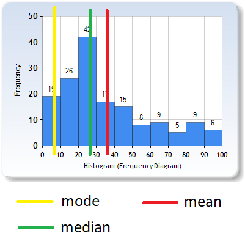
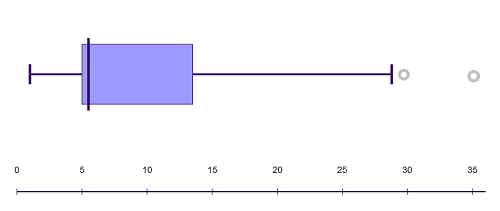
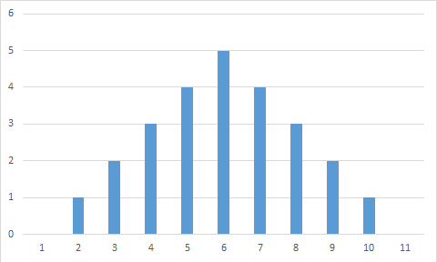
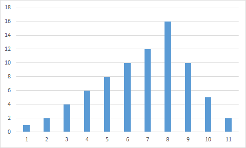
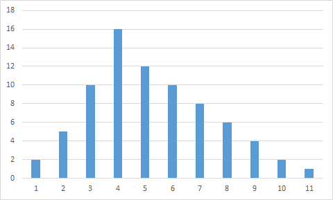
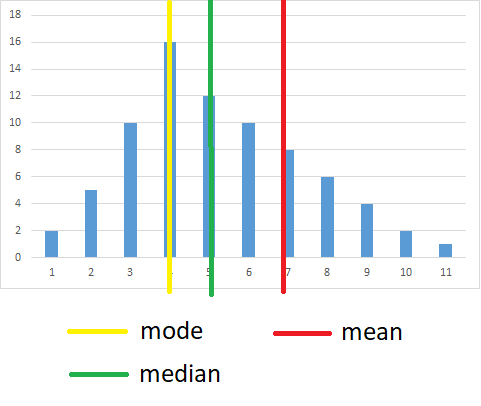

A distribution is a visualization method that shows how data allocate or how data spread out in a specific range. Different distribution includes box and whisker plot, density plot, histogram, ...
When discussing a distribution, there are 4 elements that we care about:
The level is measures of central tendency, such as a mean, mode, or median. These elements are usually shown together to have a complete look at the data. I reuse the following picture from my previous prep but with the mean, mode, and median shown on it:

The mean, mode, and median of a data set Back to top
Spread
Spread of a distribution shows its dispersion. Here's a box plot that I generated online:

Here we can see that the data mainly distribute in between 5 and 13. The difference between two ends of the box is the Interquartile Range (IQR). The verticle line is the median. So the spread helps us see the distribution of the data.
Back to top
Shape
Distribution can have 2 types of shape:
Symmetrical
Symmetrical distribution has its left half and right half are mirror images of each other.

A symmetrical distribution
Skewed
Distributions that are not symmetrical are skewed distribution. It can be skewed to the left (negative skew)

A left skew distribution
or skewed to the right (positive skew)

A right skew distribution
As you can see, the longer end (also called the tail) of the distribution determines which direction is it skewed to.
So what can shape of a distribution tells us? We can estimate where the mean, mode, and median are for each type of distribution shape. For example, because the left and right halves of the symmetrical distribution are symmetry, itsthe mean, mode, and median are at about the same place. For skewed distributions, right skewed distributions will have mode < median < mean

and contrary for left-skewed distributions.
Back to top
Outliers
This box plot has the dots to the right of the whisker. The dots are outliers of the data set. Outliers are values that are far away from the main part of the distribution. This gives us a more visual way to see if there is any exception element.
Back to top